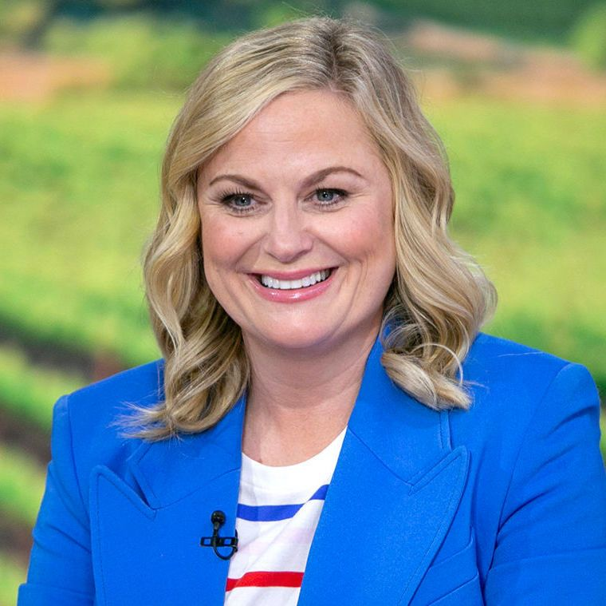
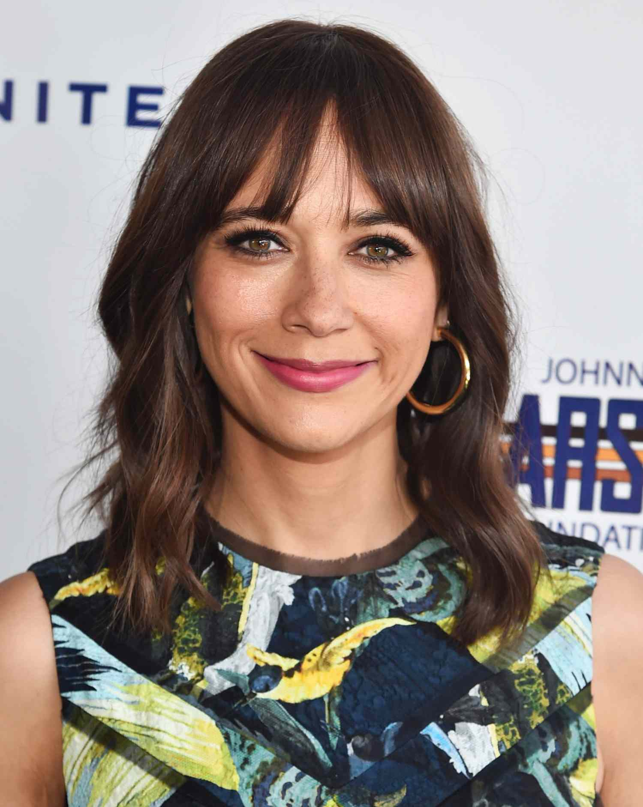
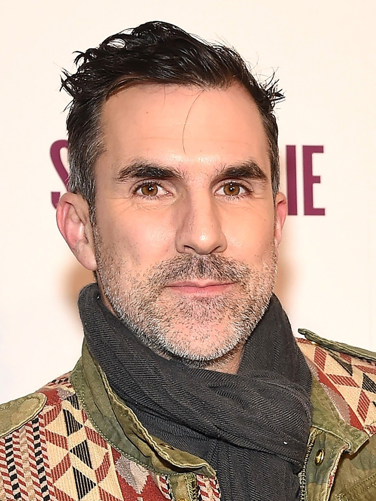
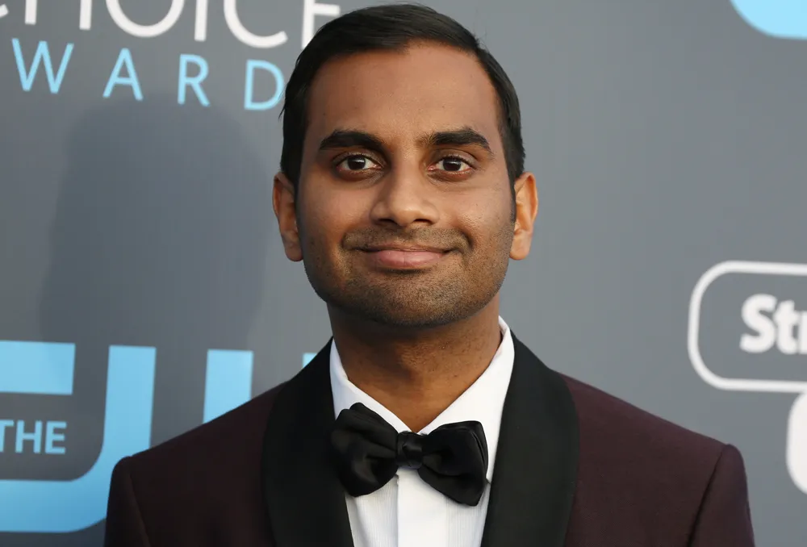
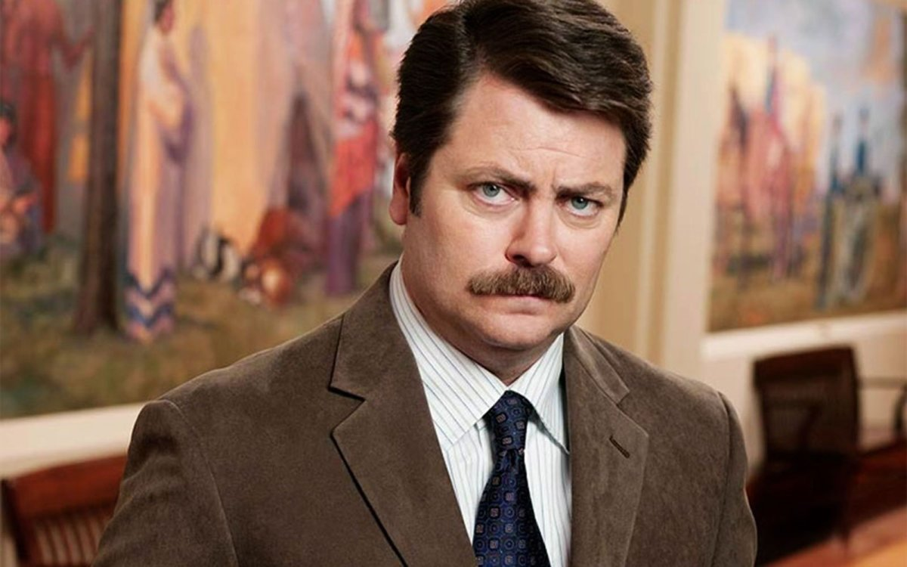
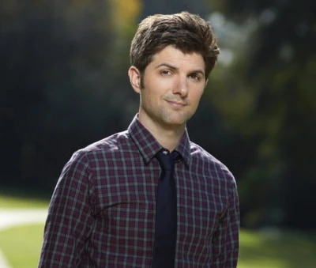

The primary characters of the American television comedy series Parks and Recreation are the employees of the parks department of Pawnee, a fictional Indiana town. The protagonist is Leslie Knope (Amy Poehler), the deputy parks director as well as serving on city council, and the rest of the ensemble cast consists of her friends and co-workers, including nurse Ann Perkins (Rashida Jones), parks director Ron Swanson (Nick Offerman), and parks department employees Tom Haverford (Aziz Ansari), April Ludgate (Aubrey Plaza), Andy Dwyer (Chris Pratt), Jerry Gergich (Jim O'Heir), and Donna Meagle (Retta).
While most of the main cast have been with the series since it debuted in April 2009, actors Rob Lowe and Adam Scott joined the cast late in the second season portraying Chris Traeger and Ben Wyatt, two state auditors who later take permanent jobs in Pawnee. Paul Schneider was a regular cast member during the first two seasons as city planner Mark Brendanawicz, but he departed at the end of season two. Billy Eichner who portrays Craig Middlebrooks, the "associate administrator" of the Pawnee parks department, recurred throughout the show's sixth season until he was promoted to the main cast in the fourth episode of the seventh season. The majority of Parks and Recreation episodes are set in Pawnee, and most of the recurring and supporting characters are friends of the main characters or residents of the town.

Leslie Barbara Knope is a fictional character portrayed by Amy Poehler and the main protagonist of the NBC sitcom Parks and Recreation. For most of the show's run, she serves as deputy director of the Parks and Recreation Department of the fictional city of Pawnee, Indiana.

Ann Meredith Perkins, RN, portrayed by Rashida Jones, is a fictional character in the NBC comedy Parks and Recreation. She is a nurse and Leslie Knope's best friend.

Mark Brendanawicz is a fictional character in the NBC comedy series Parks and Recreation. He is the city planner for Pawnee, Indiana, as well as Leslie Knope's colleague and one of Ann Perkins' ex-boyfriends.

Thomas Montgomery Haverford is a fictional character on the NBC series Parks and Recreation. He is a sarcastic, underachieving government official for the city of Pawnee who—in his own mind—is revered for his high levels of confidence and unmatched entrepreneurial skills.
crew

Ronald Ulysses Swanson is a fictional character portrayed by Nick Offerman in the political satire sitcom Parks and Recreation. The character was created by Michael Schur and Greg Daniels with inspiration from a real-life Libertarian elected official.

April Roberta Ludgate-Dwyer, née Ludgate, is a fictional character in the NBC comedy Parks and Recreation. She is portrayed by Aubrey Plaza. She is first seen as an apathetic college student working as an intern in the Pawnee Department of Parks and Recreation, before being hired as Ron Swanson's assistant.

Andrew Maxwell Dwyer KBE is a fictional character in the NBC comedy Parks and Recreation portrayed by Chris Pratt. Originally meant to be a temporary character, Andy was so likable that producers asked Pratt back as a series regular.

Benjamin "Ben" Wyatt KBE is a fictional character portrayed by Adam Scott in the TV series Parks and Recreation. The character is introduced in the final two episodes of season two, before being added to the main cast in season three.